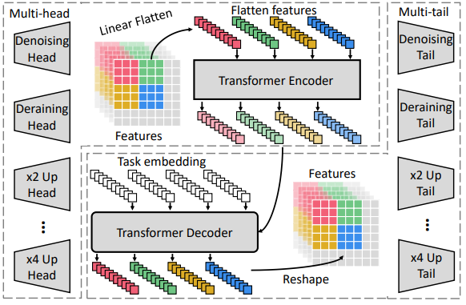
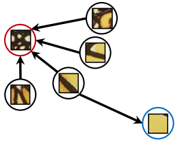
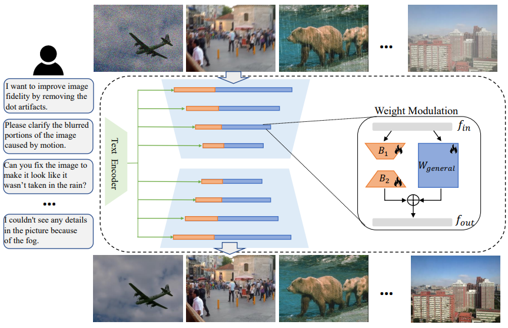

Intro
We propose a series of powerful image processing architectures that handles a variety of low-level vision tasks, including denoising, deraining, Super-Resolution, diffusion generation, etc. The models have SOTA performance on these tasks.News
7/2/2024: We released a powerful All-in-One image restoration model Instruct-IPT!6/19/2024: Our work "Image Processing GNN" got the "Best Student Paper Runner-Up" award at CVPR2024!
6/2/2024: We released the code and weights of U-DiTs!
Projects


